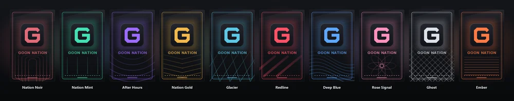

A HUD that fits you
Move and resize every panel. Track your gear, potion timers, cooldowns and inventory without opening another menu.
Explore the HUDYour HUD, maps, cosmetics and survival tools. One client for the worlds you share with friends.
Minecraft Java 26.3Free & open sourcev0.15.0

Keep the useful stuff on screen. Leave the rest out of the way.
Move and resize every panel. Track your gear, potion timers, cooldowns and inventory without opening another menu.
Explore the HUDMinimap, fullscreen map, waypoints and death markers. Save the places you find and get back to them.
Powered by Xaero’s maps.
Loot tracking, farm tools and a boss checklist. Zoom, shaders and schematics are there when you want them.
Optional features stay in your control.
Actual screenshots. Pick a view, then try a theme.


In game. The survival HUD, with your map, inventory and gear in view.
Sixteen client themes. Previewing Noir.
Ten Goon capes, made for the client. Pick your favourite in the Wardrobe and see it in third person.
Sharing with other Goon players is optional and needs the community cosmetics service.
Get Goon Client
Nation Noir and the rest of the collection.
The launcher installs Minecraft, Fabric and the Goon pack in its own folder. Your usual Minecraft setup stays separate.
Own Minecraft: Java Edition to play. Mac & Linux users can import the .mrpack into Prism Launcher or the Modrinth App.
Direct Microsoft sign-in is awaiting approval. For now, use the official Minecraft Launcher option.

Setup, servers and your account.
Download the Windows ZIP, extract the whole folder and run Goon Client Launcher.exe. Select the official Minecraft Launcher option, then choose the Goon Client installation. You need a Minecraft Java account.
Open Settings > Configs > Combatant in game. Use the HUD editor to move and resize the panels afterward.
Check the server’s rules. Some optional overlays, radar and building assists may be restricted. Keep those disabled where they aren’t allowed.
Yes. Iris and Litematica are included. Choose your own shader pack, and enable Schematics when you want to use it. The stick tool starts off.
Friends using Goon Client can see shared cosmetics when the community service is running and sharing is enabled. Your local cape works without sharing.
Sign-in uses Microsoft’s own website. Tokens stay on your PC and go only to Microsoft, Xbox Live and Minecraft. Read the privacy details.
The same release notes we post in Discord.
Load Settings > Configs > Combatant for the full HUD.
Goon Client is GPL-3.0 software. The Windows launcher ZIP includes the corresponding source and notices. The HUD and glass design are adapted from Combatant Client by pivosos2007.
Our 23-mod pack includes Sodium, Iris, Xaero’s maps, Litematica and inventory tools. Bundled mods keep their authors and licences.
EntityCulling is an optional separate install because its redistribution terms exclude this launcher.